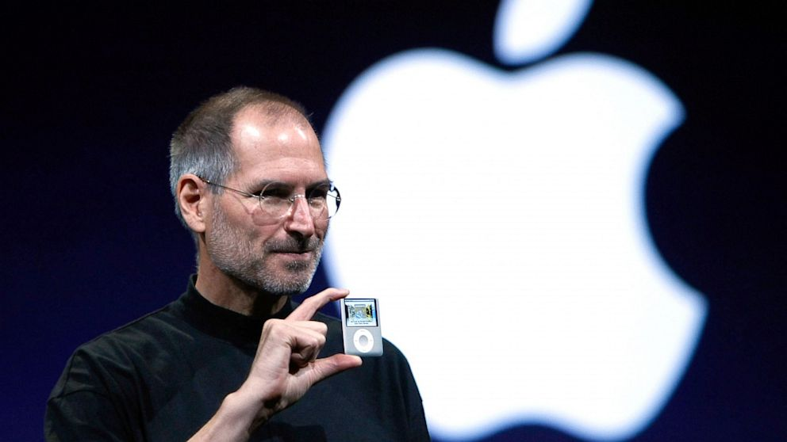
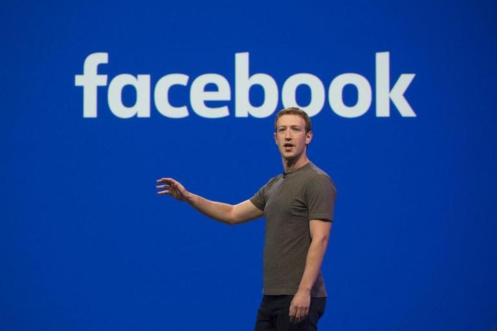

Information Technology
Stands for "Information Technology," and is pronounced "I.T." It refers to anything related to computing technology, such as networking, hardware, software, the Internet, or the people that work with these technologies. Many companies now have IT departments for managing the computers, networks, and other technical areas of their businesses. IT jobs include computer programming, network administration, computer engineering, Web development, technical support, and many other related occupations. Since we live in the "information age," information technology has become a part of our everyday lives. That means the term "IT," already highly overused, is here to stay. IT includes several layers of physical equipment (hardware), virtualization and management or automation tools, operating systems and applications (software) used to perform essential functions. User devices, peripherals and software, such as laptops, smartphones or even recording equipment, can be included in the IT domain. IT can also refer to the architectures, methodologies and regulations governing the use and storage of data. A team of administrators and other technical staffers deploy and manage the company's IT infrastructure and assets. IT teams depend on a wide range of specialized information and technology skills and knowledge to support equipment, applications and activities. Third-party contractors and IT vendor support personnel augment the IT team.The information technology profession is extremely diverse. IT workers can specialize in fields like software development, application management, hardware components such as desktop support, server or storage administrator and network architecture. Many businesses seek IT professionals with mixed or overlapping skill sets. Technology Affected in Daily LifeWe are living in an era of advanced technology, where every part of our daily lives |
Advantages of TechnologyFirst, the evolution of technology is beneficial to humans for several reasons. At the medical level, technology can help treat more sick people and consequently save many lives and combat very harmful viruses and bacteria.The invention of the computer was a very important point. Communication is thus enhanced, and companies can communicate more easily with foreign countries. Research is also simplified.For companies, progress in implementing strategic technology trends is helping them save time and therefore, money. Exchanges are faster especially with the internet. Sales and purchases are now facilitated and possible worldwide. This allows businesses to buy raw materials with discounts or at reduced prices. Similarly, global tourism has grown.Technology has also increased the productivity of almost every industry in the world. Thanks to technology, we can even pay with bitcoins instead of using banks. The digital coin has been such a game changing factor, that many realised that this is the right time to open a bitcoin demo account.When observed more closely, new things are discovered every day. Let’s take for instance when radio waves were discovered, radio broadcasts followed suit almost immediately. The same applies to the television and electricity. If no one had discovered that electricity could be generated, then the entertainment industry wouldn’t be at it’s current stage of development.Technology improves daily lives; allowing to move physical storage units to virtual storage banks and more. Scientists of the time are also able to send astronauts to the moon thanks to technology. |
Disadvantage of TechnologyOn the other hand, the evolution of modern technology has disadvantages, for example, dependence on new technology. Man no longer needs to think. Even if the calculator is a good invention, man no longer makes mental calculation and no longer works his memory. The decline of human capital implies an increase in unemployment. In some areas, devices can replace the human mind.The use of technology certainly needs rule and new laws. For example internet use is an individual freedom. However, the invention of the atomic bomb cannot be an individual freedom. In fact, regulations are difficult to implement when these technologies are introduced – such as regulation surrounding the impending arrival of autonomous vehicles.Finally, as most technological discoveries aim to reduce human effort, it would imply that more work is done by machines. This equates to less work for people: the human is becoming ever so obsolete by the day, as processes become automated and jobs are made redundant. Social media, computer games, messaging, and dating websites can all be addictive. Games want you to play so that you will buy the next version. Websites want you to interact so that they can bring in advertising money. Users end up wasting vast amounts of time and hemorrhaging money for low return.The internet is fertile territory for malevolent forces to operate, thanks to its international nature, large scale, and the relative anonymity that users can enjoy. Examples of this include: terrorists using social media to promote themselves and encourage others; drug dealers using the dark web to trade; pedophiles using chat rooms and other places to exchange photos, videos and other information; and authoritarian regimes attempting to sway or distort elections in democratic countries.Digital technology means that vast amounts of data can be collected and stored. This can be private information concerning individuals or organizations. It can be very difficult to keep this data safe. Just a single breach can mean vast amounts of private information going into the hands of criminals, terrorists, foreign enemies, or other malign entities. |
Bill Gates
Bill Gates, in full William Henry Gates III, (born October 28, 1955, Seattle, Washington, U.S.), American computer programmer and entrepreneur who cofounded Microsoft Corporation, the world’s largest personal-computer software company.Gates wrote his first software program at the age of 13. In high school he helped form a group of programmers who computerized their school’s payroll system and founded Traf-O-Data, a company that sold traffic-counting systems to local governments. In 1975 Gates, then a sophomore at Harvard University, joined his hometown friend Paul G. Allen to develop software for the first microcomputers. They began by adapting BASIC, a popular programming language used on large computers, for use on microcomputers. With the success of this project, Gates left Harvard during his junior year and, with Allen, formed Microsoft. Gates’s sway over the infant microcomputer industry greatly increased when Microsoft licensed an operating system called MS-DOS to International Business Machines Corporation—then the world’s biggest computer supplier and industry pacesetter—for use on its first microcomputer, the IBM PC (personal computer). After the machine’s release in 1981, IBM quickly set the technical standard for the PC industry, and MS-DOS likewise pushed out competing operating systems. While Microsoft’s independence strained relations with IBM, Gates deftly manipulated the larger company so that it became permanently dependent on him for crucial software. Makers of IBM-compatible PCs, or clones, also turned to Microsoft for their basic software. By the start of the 1990s he had become the PC industry’s ultimate kingmaker.Largely on the strength of Microsoft’s success, Gates amassed a huge paper fortune as the company’s largest individual shareholder. He became a paper billionaire in 1986, and within a decade his net worth had reached into the tens of billions of dollars—making him by some estimates the world’s richest private individual. With few interests beyond software and the potential of information technology, Gates at first preferred to stay out of the public eye, handling civic and philanthropic affairs indirectly through one of his foundations. Nevertheless, as Microsoft’s power and reputation grew, and especially as it attracted the attention of the U.S. Read more... |
Jeff BezosEntrepreneur and e-commerce pioneer Jeff Bezos is the founder and CEO of the e-commerce company Amazon, owner of The Washington Post and founder of the space exploration company Blue Origin. His successful business ventures have made him one of the richest people in the world. Born in 1964 in New Mexico, Bezos had an early love of computers and studied computer science and electrical engineering at Princeton University. After graduation, he worked on Wall Street, and in 1990 he became the youngest senior vice president at the investment firm D.E. Shaw. Four years later, Bezos quit his lucrative job to open Amazon.com, an online bookstore that became one of the Internet's biggest success stories. In 2013, Bezos purchased The Washington Post, and in 2017 Amazon acquired Whole Foods.Jeff Bezos was born on January 12, 1964, in Albuquerque, New Mexico, to a teenage mother, Jacklyn Gise Jorgensen, and his biological father, Ted Jorgensen. The Jorgensens were married less than a year. When Bezos was 4 years old, his mother remarried Mike Bezos, a Cuban immigrant.Bezos graduated summa cum laude from Princeton University in 1986 with a degree in computer science and electrical engineering.Bezos showed an early interest in how things work, turning his parents' garage into a laboratory and rigging electrical contraptions around his house as a child.He moved to Miami with his family as a teenager, where he developed a love for computers and graduated valedictorian of his high school. It was during high school that he started his first business, the Dream Institute, an educational summer camp for fourth, fifth and sixth graders. Read more... |
Steve JobsSteve Jobs, in full Steven Paul Jobs, (born February 24, 1955, San Francisco, California, U.S.—died October 5, 2011, Palo Alto, California), cofounder of Apple Computer, Inc. (now Apple Inc.), and a charismatic pioneer of the personal computer era. Jobs was raised by adoptive parents in Cupertino, California, located in what is now known as Silicon Valley. Though he was interested in engineering, his passions of youth varied. He dropped out of Reed College, in Portland, Oregon, took a job at Atari Corporation as a video game designer in early 1974, and saved enough money for a pilgrimage to India to experience Buddhism.Back in Silicon Valley in the autumn of 1974, Jobs reconnected with Stephen Wozniak, a former high school friend who was working for the Hewlett-Packard Company. When Wozniak told Jobs of his progress in designing his own computer logic board, Jobs suggested that they go into business together, which they did after Hewlett-Packard formally turned down Wozniak’s design in 1976. The Apple I, as they called the logic board, was built in the Jobses’ family garage with money they obtained by selling Jobs’s Volkswagen minibus and Wozniak’s programmable calculator. Jobs was one of the first entrepreneurs to understand that the personal computer would appeal to a broad audience, at least if it did not appear to belong in a junior high school science fair. With Jobs’s encouragement, Wozniak designed an improved model, the Apple II, complete with a keyboard, and they arranged to have a sleek, molded plastic case manufactured to enclose the unit. Read more... |
Mark ZukerbergMark Zuckerberg was born on May 14, 1984 in White Plains, New York, and was raised in nearby Dobbs Ferry. He was born into a well-educated family and developed an interest in computer programming at an early age.At the age of 12, Zuckerberg created a messaging program named Zucknet that he implemented as an inter-office communication system for his father's dental practice. Due to his early signs of success, his parents got him a computer programming tutor while he was still in high school, and they enrolled him in a prep school in New Hampshire. After graduating from prep school, Zuckerberg enrolled in Harvard University.While many intelligent people attend Harvard University, Mark Zuckerberg became known quickly as the go-to computer programmer on campus. By his sophomore year, he had already built two programs: CourseMatch and FaceMash. Both programs became wildly popular, but the university shut down the latter program after it was deemed to be inappropriate.Based on his acclaim on campus, Zuckerberg partnered with friends to create a social networking site that allowed Harvard students to connect with each other. The site officially went live in June 2004 under the name "The Facebook," and Zuckerberg ran it out of his dorm room.After his sophomore year, Zuckerberg dropped out of college to pursue what was then called Facebook full-time. The website reached 1 million users by the end of 2004.This explosion of user growth attracted the attention of many venture capital (VC) firms, and Zuckerberg eventually moved out to Silicon Valley in 2005. Facebook received its first round of venture capital investments from VC firm Accel Partners, which invested $12.7 million in the site that was still only open to Ivy League students. Read more... |
 is related to the science of craft in one way or another. There's no doubt that over the years technology has been responsible for creating amazingly useful resources which put all the information we need at our fingertips. The development of technology has led to so many mind-blowing discoveries, better facilities, and better luxuries, but at the same has dramatically changed our daily lives. Various highly-developed gadgets, connected to the Internet, have changed the way we communicate, use humor, study, work, shop, play, and behave. Technology has also given us brand new devices in recent decades, like smartwatches, tablets, and voice assistant devices. With these devices, we can do things like transfer money instantly and make purchases for everything from clothes, food delivery, groceries, furniture, and more. Technology has changed how we entertain ourselves, meet each other, and consume all types of media. It’s made fun advancements, but it’s also made important advancements in safety when it comes to home security and medical devices. Not only merits but technology has also have some demerits. Nowadays, we human are totaly depend upon technology. We are using technology even to do small work. It makes us lazy day by day. It has also increase cyber crime. Technology has made life faster and more efficient. But it has also had a significant impact on the environment, and may cause us to lose touch with what really matters: family rather than gadgets, natural beauty rather than the images on our laptop screen.Perhaps the way to think about technology is this: it can be used for good or for ill, so it is important to ensure that when we engage with technology we do so in a way that is responsible in terms of the environment, our relationship with others, our finances, and our own health. Here are some biggest personality in the world who earn name, fame and wealth because of proper use of technology:
is related to the science of craft in one way or another. There's no doubt that over the years technology has been responsible for creating amazingly useful resources which put all the information we need at our fingertips. The development of technology has led to so many mind-blowing discoveries, better facilities, and better luxuries, but at the same has dramatically changed our daily lives. Various highly-developed gadgets, connected to the Internet, have changed the way we communicate, use humor, study, work, shop, play, and behave. Technology has also given us brand new devices in recent decades, like smartwatches, tablets, and voice assistant devices. With these devices, we can do things like transfer money instantly and make purchases for everything from clothes, food delivery, groceries, furniture, and more. Technology has changed how we entertain ourselves, meet each other, and consume all types of media. It’s made fun advancements, but it’s also made important advancements in safety when it comes to home security and medical devices. Not only merits but technology has also have some demerits. Nowadays, we human are totaly depend upon technology. We are using technology even to do small work. It makes us lazy day by day. It has also increase cyber crime. Technology has made life faster and more efficient. But it has also had a significant impact on the environment, and may cause us to lose touch with what really matters: family rather than gadgets, natural beauty rather than the images on our laptop screen.Perhaps the way to think about technology is this: it can be used for good or for ill, so it is important to ensure that when we engage with technology we do so in a way that is responsible in terms of the environment, our relationship with others, our finances, and our own health. Here are some biggest personality in the world who earn name, fame and wealth because of proper use of technology: